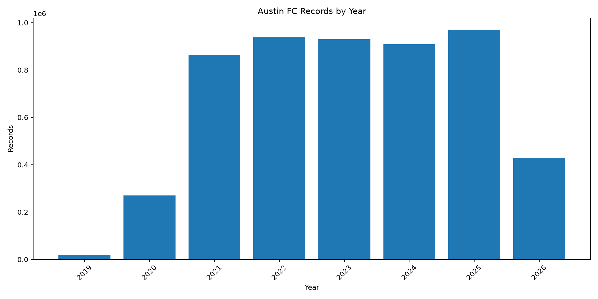
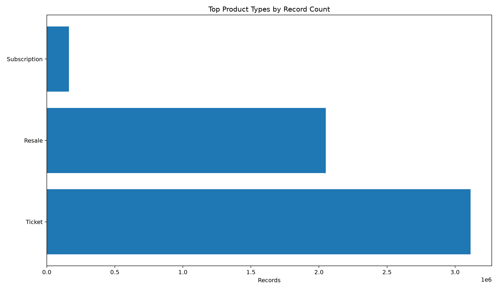
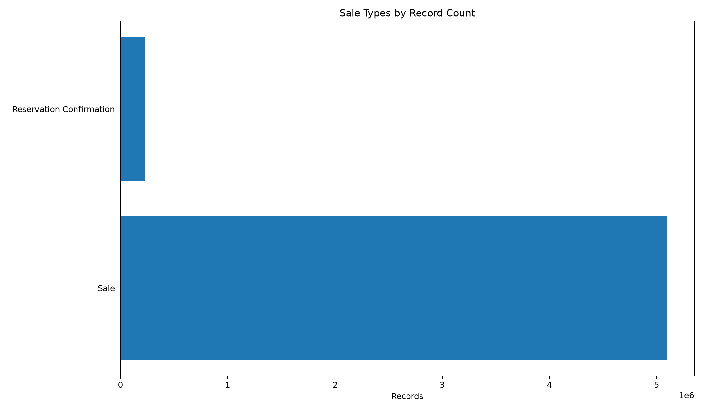

Executive Summary
5,326,581
Total Records
$482,706,014.11
Total Payment
$90.62
Average Payment
5
PASS Checks
7
REVIEW Checks
0
FAIL Checks
Dataset Coverage
Earliest transaction: 2019-08-15 18:42:04.997000
Latest transaction: 2026-09-18 21:21:33.293000
Minimum payment: $0.00
Maximum payment: $293,025.20
NULL payments: 0
Zero payments: 2,062,980
Negative payments: 0
Data Quality Scorecard
| Area | Status | Finding | Recommendation |
|---|---|---|---|
| Dataset completeness | PASS | Dataset contains exactly 5,326,581 rows. | Retain the complete dataset as the audit baseline. |
| Payment completeness | PASS | No NULL total_payment values were detected. | No action required. |
| Negative payments | PASS | No negative payment values were detected. | No action required. |
| Zero payments | REVIEW | 2,062,980 zero-payment records were detected. | Determine whether zero values represent complimentary or non-revenue transactions. |
| Future transactions | PASS | No transaction dates occur after the current timestamp. | No action required. |
| Date ordering | PASS | No transaction_date values occur after last_touched_at. | No action required. |
| Identifier: primary_ticket_id | REVIEW | 1,586,095 duplicate primary_ticket_id groups were detected. | Determine whether repeated identifiers are expected at the dataset's business grain. |
| Identifier: subscription_instance_id | REVIEW | 125,430 duplicate subscription_instance_id groups were detected. | Determine whether repeated identifiers are expected at the dataset's business grain. |
| Identifier: sales_item_id | REVIEW | 178 duplicate sales_item_id groups were detected. | Determine whether repeated identifiers are expected at the dataset's business grain. |
| Identifier: product_item_id | REVIEW | 178 duplicate product_item_id groups were detected. | Determine whether repeated identifiers are expected at the dataset's business grain. |
| Identifier: transaction_id | REVIEW | 888,928 duplicate transaction_id groups were detected. | Determine whether repeated identifiers are expected at the dataset's business grain. |
| Identifier: product_id | REVIEW | 575 duplicate product_id groups were detected. | Determine whether repeated identifiers are expected at the dataset's business grain. |
Yearly Revenue

Yearly Records

Monthly Revenue

Product Types

Sale Types

Payment Distribution

Audit Methodology
This audit was performed against the complete PostgreSQL source table.
The audit does not load all source records into pandas. Large aggregations are performed by PostgreSQL and only small aggregate result sets are transferred to Python.
The source dataset contains more than five million records. Transaction-level exports are intentionally excluded from the published audit.